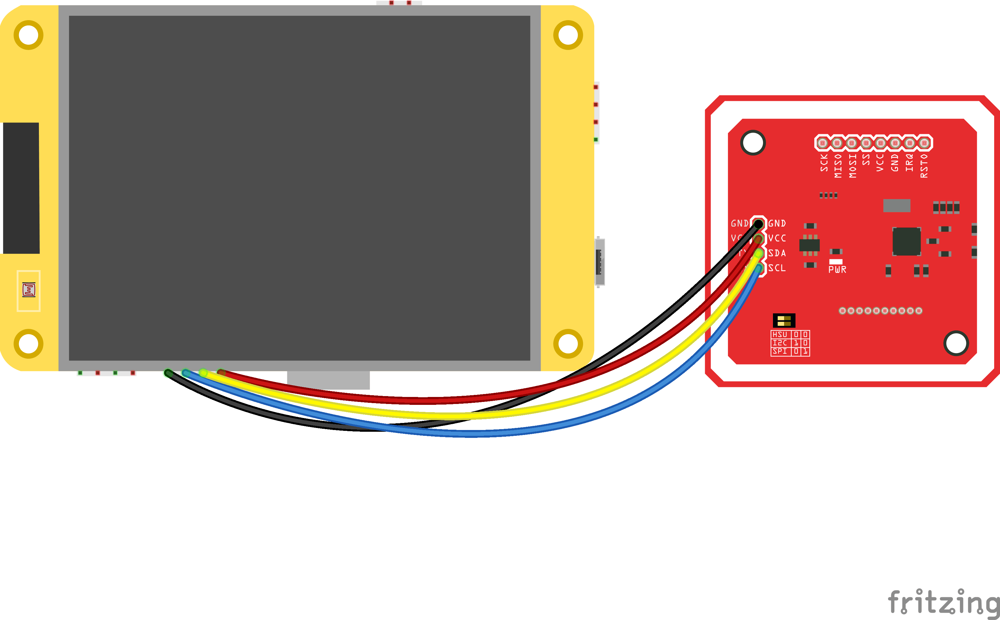

Hardware
What you need
Part |
Notes |
|---|---|
ESP32-2432S028 “Cheap Yellow Display” |
ESP32-WROOM-32, 2.8” ILI9341 240×320 display used in portrait, XPT2046 resistive touch, 4 MB flash. Sold under many names; the CYD community repository lists the variants. |
PN532 NFC module |
The common red breakout board, used over I²C. Its two mode switches must be set to I²C. |
Cryptnox Hardware Wallet card |
Firmware v1.6.0 or later (the Dual Card Set ships v1.6.1). The card must be initialised with a seed; see Preparing the card. |
Four jumper wires and a USB cable |
Female-to-female Dupont wires between the CYD’s CN1 header and the PN532; a data USB cable to flash and power the board. |
A computer |
For the prebuilt firmware: any machine with Chrome or Edge, or Python and |
Wiring
The CYD exposes its free GPIOs on the CN1 header. The firmware talks to the PN532 over I²C on two of them.
PN532 pin |
CYD pin (CN1) |
Wire colour in the diagram |
|---|---|---|
GND |
GND |
black |
VCC |
3.3V |
red |
SDA |
GPIO 27 |
yellow |
SCL |
GPIO 22 |
blue |


The four wires between the CYD’s CN1 header and the PN532, by colour.
Note
Set the PN532 mode switches to I²C = ``1 0`` as printed on the board: switch 1 ON,
switch 2 OFF (0 1 is SPI). The PN532 reads the switches only at its own power-up and
its reset pin is not wired, so after changing them unplug and replug the USB cable; an
ESP32 reset is not enough. Double-check the wiring before powering the board.
The display, touch panel and backlight are wired internally on the CYD and need nothing.
Enclosure
The enclosure is a two-part printed shell, published under hardware/case/:
File |
What it is |
|---|---|
|
Front shell: the screen window and the four posts the board sits on. |
|
Back shell: the pocket for the NFC module and the contactless symbol on the lid. |
|
Both parts on one plate for Bambu Studio — print this. |
It is a snap-fit shell: no screws and no inserts. About an hour and a half of printing in PLA or PETG, dimensionally accurate — an over-extruded lip will not clip.
The seven assembly steps, with photographs, are in Assembling the terminal.